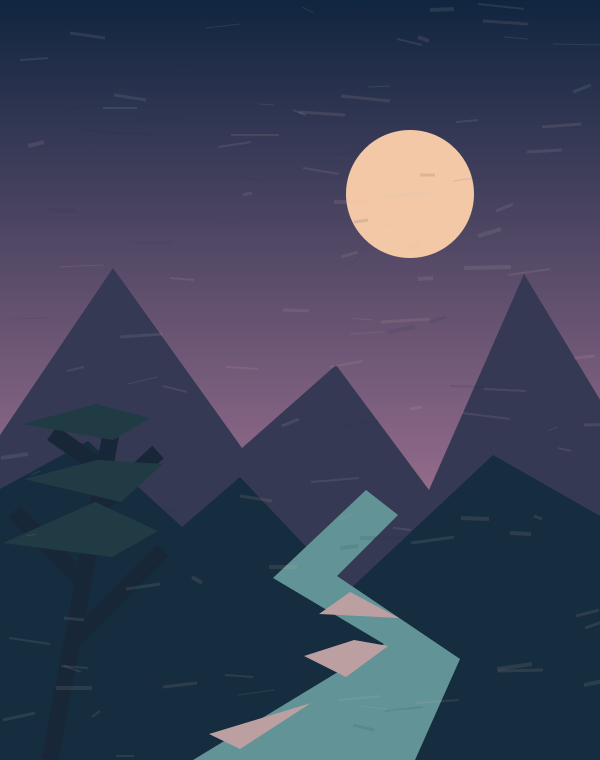
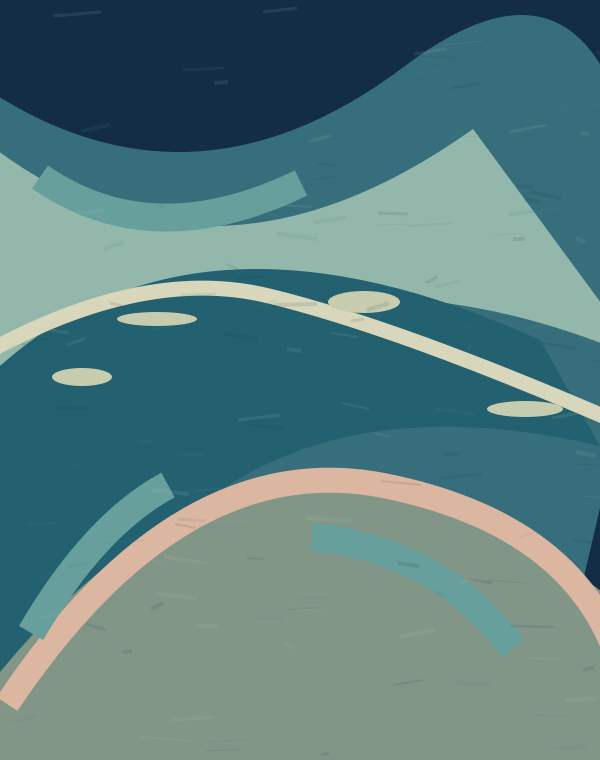
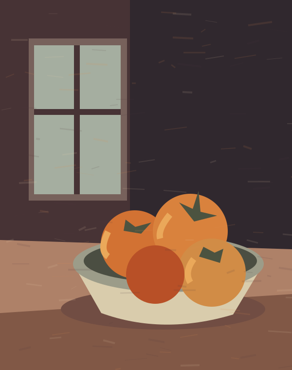
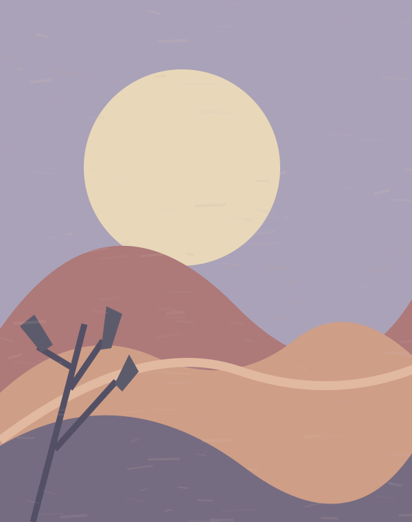
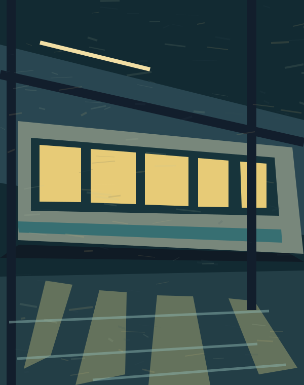
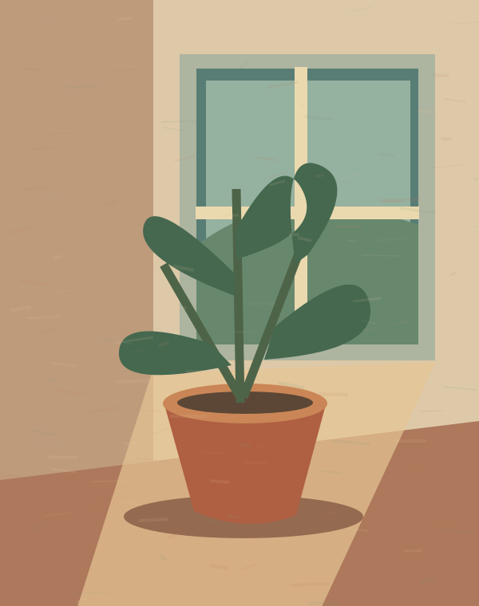

SOMEWHERE AFTER MIDNIGHT
A little art for the way home.
A small escape by Jayden KimSTAY AS LONG AS YOU LIKE
ART DISPENSARY
A COLLECTION OF LITTLE WORLDS
Showing all 6 demo paintings.






お好きな作品をお選びくださいTAKE YOUR TIME. PICK A WORLD.